Consultoría e ingeniería en ciberseguridad OT e IT
Conocer más →GRUPOCIBEROT
GrupoCiberOT es un holding que integra tecnología, ingeniería y servicios especializados para proteger la continuidad operacional de organizaciones críticas.
UN HOLDING, CAPACIDADES COMPLEMENTARIAS
Sumamos experiencia, tecnología e ingeniería para entregar soluciones completas en ciberseguridad, infraestructura y automatización industrial.

Consultoría e ingeniería en ciberseguridad OT e IT
Conocer más →Ingeniería, proyectos y automatización industrial.
Conocer más →Sinergia y trazabilidad entre TI, OT e IoT para entornos industriales y corporativos.
Conocer más →NOSOTROS
GrupoCiberOT es un holding especializado en ciberseguridad, ingeniería y tecnología, que trabaja para organizaciones críticas, conectando el mundo TI, el entorno industrial OT y los dispositivos IoT, con una visión transversal de seguridad, cumplimiento y continuidad operacional.
Conectamos tecnología, ingeniería y ciberseguridad.
Visión común sobre activos, riesgos y procesos.
Contribuimos a operaciones más seguras, resilientes y sostenibles.
NUESTRA PRESENCIA
Acompañamos a organizaciones en Chile, Latinoamérica y Europa, integrando estándares internacionales y mejores prácticas en ciberseguridad.
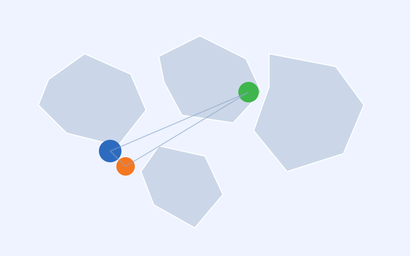
LIDERAZGO Y EXPERIENCIA
VP Administration
& Finance
Manager
Management Control
CEO / President
VP Services &
Cybersecurity
Manager Marketing
& Communications
VP Commercial
& Business Development
ENFOQUE EN VINCULACIÓN E INNOVACIÓN
SOLUCIONES
Integramos soluciones propias y tecnologías globales para ayudar a las organizaciones a reducir riesgos, fortalecer la resiliencia y asegurar la continuidad de sus operaciones críticas.
SOLUCIÓN PROPIA
Nuestra plataforma OTRISKMAPS permite evaluar, visualizar y gestionar el riesgo en entornos industriales (OT), facilitando la toma de decisiones y el desarrollo de planes de acción efectivos.
Conocer más →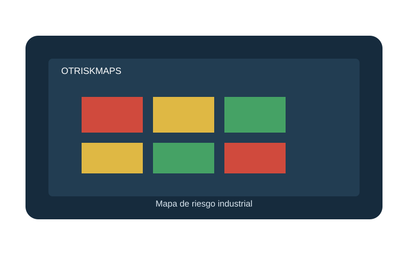
SOLUCIONES TECNOLÓGICAS
Trabajamos con líderes tecnológicos globales para integrar soluciones de clase mundial en ciberseguridad, privilegios, conectividad y protección de entornos industriales.
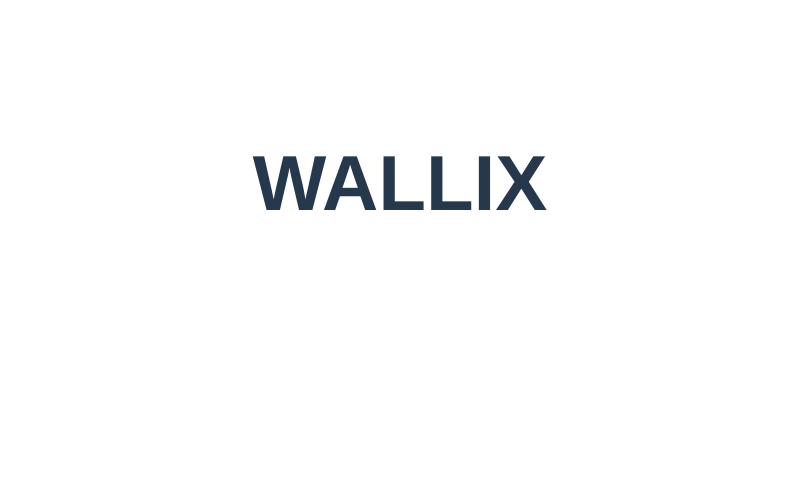
Gestión de accesos privilegiados.Protege y controla el acceso a tus sistemas críticos con una gestión segura de identidades y privilegios.
Conocer más →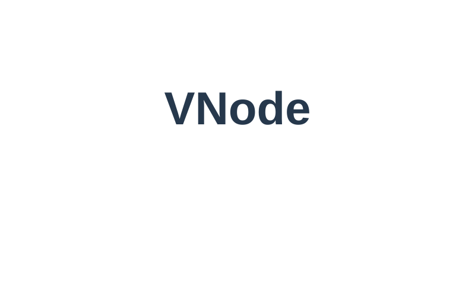
Conectividad segura.Soluciones de acceso remoto seguro para entornos industriales, sin comprometer la operación.
Conocer más →SERVICIOS
Entregamos servicios especializados en ciberseguridad OT, ingeniería y tecnología, diseñados para reducir riesgos, fortalecer la resiliencia y asegurar la continuidad de las operaciones críticas.
Análisis del estado de seguridad OT para identificar brechas, vulnerabilidades y oportunidades de mejora.
Diseño de estrategias y planes de acción alineados a los objetivos del negocio y al marco regulatorio.
Identificación, análisis y priorización de riesgos en activos, procesos y entornos industriales.
Texto conservado del Figma; conviene validar el título/descripción.Integración de soluciones de ciberseguridad OT en entornos industriales, considerando la arquitectura y operación existente.
Despliegue de soluciones y medidas de seguridad, con un enfoque práctico, seguro y alineado a la operación de cada industria.
Desarrollo de planes y medidas para aumentar la resiliencia, gestionar incidentes y asegurar la continuidad de las operaciones críticas.
NUESTRA METODOLOGÍA
Combinamos conocimiento, experiencia y tecnología para entregar soluciones efectivas y sostenibles.
INDUSTRIAS
Entendemos los desafíos de cada industria y sus entornos operacionales. Aplicamos nuestra experiencia en ciberseguridad OT, ingeniería y tecnología para entregar soluciones adaptadas a sus necesidades y niveles de riesgo.
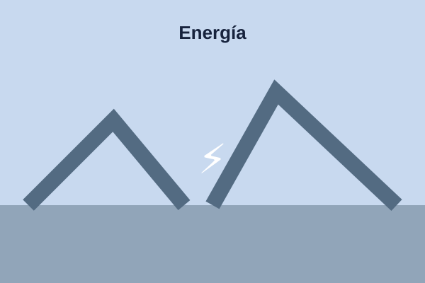
Protección de infraestructuras críticas en generación, transmisión y distribución.
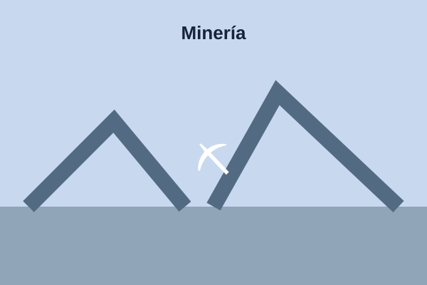
Seguridad y continuidad en procesos críticos de extracción y procesamiento.
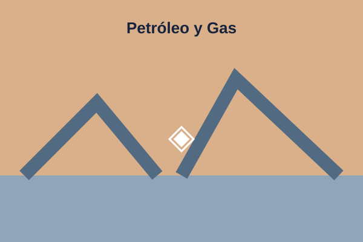
Protección de operaciones de upstream, midstream y downstream.
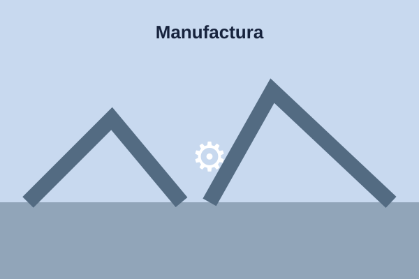
Seguridad de procesos de producción y cadenas de suministro industriales.
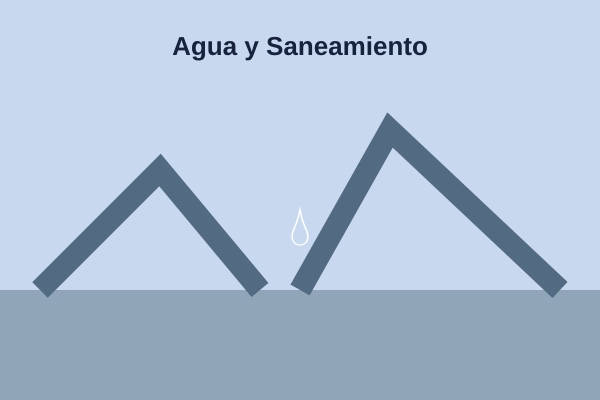
Resiliencia en sistemas de control y operación de infraestructuras críticas.
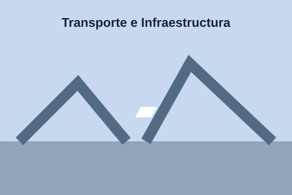
Protección de sistemas críticos en transporte, logística y obras estratégicas.
NUESTRO ENFOQUE
Aplicamos experiencia, tecnología y conocimiento normativo para proteger lo que mantiene en movimiento al mundo.
MARCO REGULATORIO
Apoyamos a las organizaciones en el entendimiento y cumplimiento del marco regulatorio aplicable a la ciberseguridad OT, con un enfoque práctico y orientado a la continuidad operacional.
La ley y sus normativas asociadas establecen, entre otros aspectos:
Identificación, análisis y tratamiento de riesgos en redes y sistemas de información.
Definición de roles, responsabilidades y políticas de ciberseguridad.
Programas de formación continua para colaboradores y terceros relevantes.
Reporte oportuno de incidentes significativos a la autoridad competente.
Implementación de medidas para asegurar la continuidad de los servicios esenciales.
Supervisión por parte de la autoridad y eventuales sanciones por incumplimiento.
Trabajamos alineados a las principales normativas, estándares y buenas prácticas.
CASOS DE ÉXITO
Hemos acompañado a organizaciones de distintas industrias en la protección de sus operaciones críticas, con soluciones de ciberseguridad OT adaptadas a sus desafíos y objetivos.
Esta vista se construye con la estructura del wireframe original; no se recibió una exportación corregida de Figma para esta pantalla.
Implementación de un programa de gestión de riesgos OT que permitió fortalecer la continuidad operacional y reducir la superficie de ataque en sistemas críticos.
Diseño e implementación de controles de ciberseguridad OT para entornos industriales de alta disponibilidad.
Evaluación y fortalecimiento de la seguridad en sistemas de control y comunicaciones.
Implementación de controles para proteger sistemas de control y monitoreo.
CONTACTO
Estamos listos para apoyar a su organización en la protección de sus operaciones críticas, con soluciones de ciberseguridad OT adaptadas a sus necesidades.